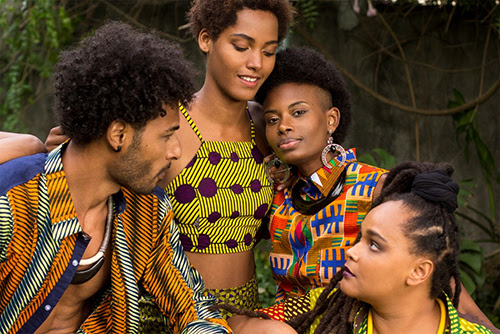
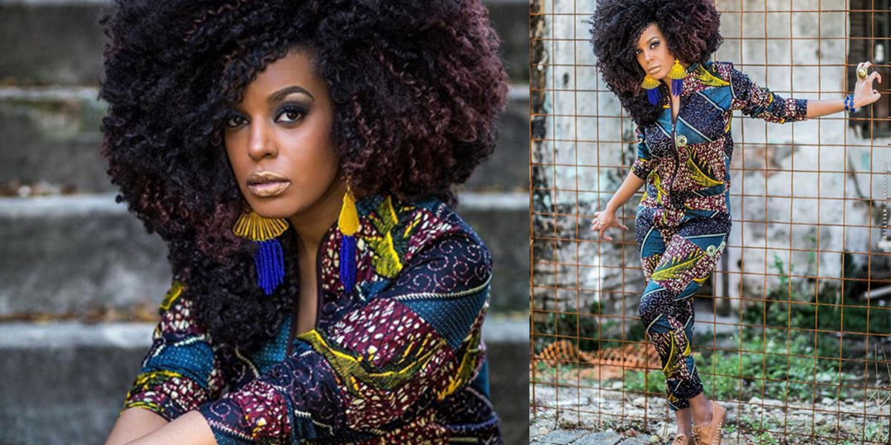

MODA
AFRODESCENDENTE
A cultura afrodescendente é uma moda que exala empoderamento e representatividade. Para iniciar o assunto que vamos desenvolver, vamos colocar dados para contextualiza-lo.

- 54% da população brasileira é negra;
- 30% da população é formada só por mulheres negras;
- no total, existem 104 milhões de negros no país;
- metade dos empresários brasileiros são afrodescendentes, isso representa um aumento de 6% no período de 10 anos;
- os consumidores negros movimentam cerca de R$ 800 bilhões por ano;
- a maioria dos consumidores fazem parte da classe média;
- 60% dos negros afirmam que as propagandas não costumam retratar a sua etnia como deveria.
fonte: SEBRAE

A partir disto, temos um cenário caracterizado pela importância econômica, social e política que esta moda representa em sua totalidade.
Em relação a isto, temos como principal referência o contexto histórico que esta moda diz a respeito sobre o movimento cultural afrodescendente com a sua importância humana.